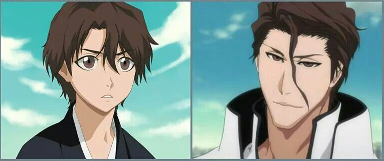

Johan Liebert
Johan Liebert  Yagami Raito
Yagami Raito  Regāto Bursamāzu
Regāto Bursamāzu  Griffith
Griffith  The Major
The Major  Schneizel el Britannia
Schneizel el Britannia  Father
Father Esdeath
Esdeath  Naraku
Naraku Aizen Sosuke
Sōsuke Aizen (藍染 惣右介, Aizen Sōsuke) to były kapitan 5. Oddziału, jego wicekapitanem była Momo Hinamori. Zdradził Gotei 13 wraz z Ginem Ichimaru oraz Kaname Tōsenem. Był przywódcą Arrancarów. Były głównyantagonista mangi Bleach. Został pokonany przez Ichigo Kurosakiego, zapieczętowany przez Uraharę i poddany karze przez Najwyższą Komnatę 46.
Wygląd
Przed odejściem z Soul Society Aizen był mężczyzną o łagodnej powierzchowności i ciepłych, brązowych oczach. Jego delikatnie falujące, brązowe włosy sprawiały wrażenie lekkiego nieładu. Nosił również okulary z prostokątnymi oprawkami. Ubierał się w standardowy ubiór Shinigami i kapitańskie haori.Po ucieczce do Hueco Mundo pozbył się okularów, a włosy zaczesywał do tyłu z wyjątkiem pojedynczego pasma, które opadało mu na czoło. Jego oczy nabrały złowrogiego wyrazu. Pierwotnie kapitańskie haori zastąpił białym płaszczem Arrancara, który nosił bezpośrednio na shihakushō. Po uprowadzeniu Orihime Inoue, Aizen zaczął ubierać się jak Arrancar. Do swojego stroju dodał szeroką purpurową wstęgę, którą przewiązał w pasie.
Wygląd Aizena zmienia się ponownie po przegranej z Ichigo Kurosakim. Traci wszystkie fizyczne zmiany dokonane przez transformacje i wraca do formy przed nią.
Osobowość
Jako kapitan 5. Oddziału, Aizen jest zaskakująco uprzejmy, często zwraca się do podwładnych po imieniu, używając zwrotów grzecznościowych. Rzadko pokazuje oznaki zaniepokojenia lub stresu. Spowodowane jest to tym, że zazwyczaj ma wszystko zaplanowane z dużym wyprzedzeniem. Podczas walki Aizen bardzo rzadko ujawnia jakiekolwiek emocje i zachowuje wręcz nienaturalny spokój, co czasem drażni jego przeciwników, którzy są w pełni zaangażowani w walkę z nim. Czasem bywa rozmyślnie okrutny i ma skłonności do uderzania w słaby punkt wroga, jak w przypadku pierwszej walki z Hitsugayą, kiedy to celowo swoimi docinkami na temat Hinamori prowokował Tōshirō do ataku.Początkowo Aizen wydawał się miłym i bardzo szanowanym kapitanem. W oczach wielu osób był osobą budzącą zaufanie, zwłaszcza swojej wicekapitan Momo Hinamori. Była to jednak jedynie maska Aizena, która miała ukryć jego prawdziwą naturę i oddalić od niego potencjalne podejrzenia. Aizen nie waha się poświecić życia swoich podwładnych czy znajomych w dążeniu do osiągnięcia swoich celów. Aizen nie uznaje żadnych wartości etycznych ani moralnych, które w jego oczach są tylko ograniczeniem i uniemożliwiają rozwój wybitnym jednostkom. Aizen uwielbia manipulować ludźmi w swoim otoczeniu. Czasem specjalnie prowokuje swoich podwładnych albo napusza ich na siebie, jak w przypadku Grimmjowa i Kaname. Wydaje się, że Aizen jest całkowicie niezdolny do empatii i pozbawiony jakichkolwiek ludzkich odruchów.
Podobno Aizen lubi tofu, za to nie lubił jajek. W wolnym czasie często czytał i uczył kaligrafii w Akademii Shinigami. Ten opcjonalny kurs był bardzo popularny wśród studentów Shinigami, a wielu z nich czuło ogromny żal po odejściu Aizena.
Jako dowódca armii Arrancarów, Aizen kontroluje swoich podwładnych albo poprzez nabyty szacunek albo przez strach. Ulquiorra Cifer, jeden z jego najbardziej lojalnych podwładnych, ujawnił w rozmowie z Orihime Inoue, że oni wszyscy istnieją tylko dla jego ambicji. W przypadku bardziej dzikich i nieobliczalnych osób, jak Grimmjow Jaegerjaquez, do utrzymania posłuszeństwa stosuje strach, różne gry i prowokacje umysłowe. Jeden z Arrancarów, Aisslinger Wernarr, stwierdził, że podążają oni za Aizenem, ponieważ są istotami zrodzonymi z przerażenia i rozpaczy, a Sōsuke niczego się nie boi.
Aizen okazuje zadowolenie, kiedy wszystko idzie zgodnie z jego planem i gdy odnosi sukcesy. Jest bardzo cierpliwy i potrafi w spokoju czekać na rozwój wydarzeń, który często jest właśnie taki jak sobie zaplanował. Cały czas bacznie obserwował Ichigo i jego przyjaciół oraz był zaskoczony przybyciem Hinamori na pole walki w Sztucznej Karakurze.
Prawdziwym celem Aizena było obalenie króla Soul Society. Kiedy on i pozostała dwójka zdradzieckich kapitanów odchodzili z Soul Society, powiedział Jūshirō Ukitake, że "nikt nie stanął na szczycie świata", nawet bogowie, ale on dąży do "stanięcia na niebiosach i zakończenia nieznośnego pustostanu na stolicy świata". Aby to zrobić, musiał stworzyć Ōken (王鍵, Królewski Klucz), który otwierał portal do wymiaru zamieszkanego przez Króla Dusz. Chociaż jego położenie jest znane jedynie wszechkapitanowi Yamamoto, Aizen zna sposób na stworzenie klucza innym sposobem. Aby to uczynić, należy zebrać 100 000 dusz i znaleźć miejsce o niezwykłym natężeniu cząsteczek duchowych. Idealnym do tego miejscem jest Karakura.
Według Kisuke Urahary, od czasu opanowania Hōgyoku, Aizen stał się mniej ostrożny w walce i nie starał się już bronić przed atakami, nawet takimi jak Hadō 91. poziomu. Aizen przyznaje, że jego moce pozwalają mu na "opuszczenie gardy". Dzięki odkrytej mocy stał się również bardziej arogancki i zbyt pewny siebie, często atakował bez przemyślenia i lekceważył przeciwników. Wierzył, że przewyższył zarówno Shinigami jak i Hollowy. Z powodu przekonania o swojej wyższości i całkowitej kontroli nad sytuacją Aizen łatwo się wścieka w obliczu czegoś, czego nie rozumie, na przykład gdy Ichigo w swojej ostatecznej formie, blokuje jego cios gołą dłonią. Sōsuke wpada w szał i nie jest w stanie pojąć jak to możliwe, że zwykły człowiek go przewyższył.
Umiejętności
Genialny intelekt: Prawdopodobnie najbardziej przerażającą cechą Aizena jest jego wysoka inteligencja. Jest obeznany w historii, strategii czy taktykach Soul Society, a także o nieznanych dla większości rzeczach, np. Ōken, a także tajemniczym sposobie jego stworzenia. Stworzył również kilku Hollowów oraz Arrancarów, nie wzbudzając podejrzeń u swoich kolegów Shinigami. Od ponad 110 lat przeprowadzał niebezpieczne eksperymenty mające na celu badanie energii duchowej i manipulowanie nią, w tym badania nad Hollowfikacją, które nigdy wcześniej nie były przeprowadzane. Wie bardzo dużo o naturze Hōgyoku, dorównując wiedzą jego stwórcy, Kisuke Uraharze.Mistrz manipulacji: Okazał się być przebiegłym i chytrym człowiekiem. Najbardziej rozpoznawalną cechą Aizena jest zdolność oszukiwania i manipulowania innymi wokół siebie na wiele sposobów. Przez lata potrafił utrzymać pozory człowieka spokojnego, dobrego i troskliwego, nie wzbudzając żadnych podejrzeń w Soul Society, podczas gdy wykonywał okropne eksperymenty. Ma wielki talent do analizy i obserwacji wszystkich, których zna, dzięki czemu może łatwiej manipulować ludźmi. Jest świetnym strategiem, zawsze jest o krok przed swoim przeciwnikiem.
Mistrz taktyki: Wykazał się być wielkim taktykiem, przewidując ruchy przeciwnika. Tworzy strategie uwzględniając mocne i słabe strony przeciwnika. Stworzył potężnego Arrancara specjalnie po to aby mógł zapieczętować płomienie miecza Yamamoto, który przewyższa jego umiejętności. Większość jego strategii opiera się o zdolności hipnotyczne jego miecza, dzięki czemu jest niezwykle wymagającym przeciwnikiem. Aizen postępuje bardzo rozważnie i nie podejmuje pochopnych decyzji, dlatego trudno go zaskoczyć a jego walki często kończą się zwycięstwem.
Mistrz Kidō: Aizen wykazał się sporymi umiejętnościami demonicznej magii. Jest w stanie użyć Kidō 90. poziomu, bez użycia inkantacji i pokonać Shinigami klasy kapitana, jednak sam stwierdził, że to tylko próbka tego zaklęcia. Był nawet w stanie obronić się Dankū przed atakiem kapitana Korpusu Kidō, który jest jednym z najsilniejszych w Soul Society w Kidō. Gdy wszczepił w siebie Hōgyoku, pokazał pełną moc Kurohitsugi, jednak Ichigo uwolnił się z niej. Czar obejmował powierzchnię kilkunastu kilometrów kwadratowych.
Ogromna siła: Był w stanie zatrzymać Ichigo w formie Bankai jednym palcem (jednak Kurosaki był zmęczony po walce z Byakuyą) i gołymi dłońmi rozerwał miecz w formie Shikai Renjiego. Był w stanie zatrzymać Komamurę jedną ręką w formie Shikai, stwierdzając, że walczy na tym samym poziomie siły fizycznej co on. Później przeciął też Bankai Komamury.
Ogromna moc duchowa: W gronie kapitanów Gotei 13 Aizena wyróżnia ogromna ilości mocy duchowej. Marechiyo Ōmaeda skomentował, że jego obecność jest bardzo przytłaczająca. Podczas zamiany Wonderweissa w Arrancara stwierdza, że aby obudzić chwilowo Hōgyoku potrzeba mocy dwukrotnie większej niż przeciętnego kapitana, co było aluzją do jego mocy duchowej. Siła duchowa Aizena jest tak duża, że bez widocznego wysiłku sprowadza 6. Espadę na kolana. Gdy próbował odzyskać Rukię od Renjiego, użył przenośni, że trudno mu nadepnąć mrówkę i jej nie zdeptać. Sam stwierdza, że jest silniejsi niż wszyscy z Espady razem wzięci. Jego moc duchowa jest tak wysoka, że jest w stanie zablokować technikę Nigeki Kessatsu Suì-Fēng.
Mistrz walki mieczem: Choć nie zostały jeszcze w pełni pokazane jego umiejętności walki mieczem, udowodnił, że posiada zdolności walki z przeciwnikami posiadającymi Shikai jak i Bankai, podczas gdy jego Zanpakutō zostaje zapieczętowany. Wykazał również, że potrafi wykonać szybkie i precyzyjne uderzenia, zdolne przeciąć niezwykle wytrzymałe cele, takie jak Shikai Renjiego.
Mistrz Shunpo: Jest na tyle szybki, że jego przeciwnik orientuje się, że się przemieścił, dopiero po fakcie. Widać jak łatwo pokonuje Ichigo w masce, po czym błyskawicznie pojawił się przy nim kładąc mu rękę na piersi. Jest w stanie bez trudu ominąć ataki poziomu Bankai. Porusza się tak szybko, że przeciwnicy często nie widzą jego ruchów, może uniknąć nawet szybkich ataków będąc odwróconym plecami do przeciwnika. Jest wątpliwe czy jest tak szybki jak Yoruichi Shihōin, czy Sui-Feng, zwłaszcza widać to po tym, jak otoczyły i unieruchomiły go, zanim ten wyciągnął swój miecz przed ucieczką z Soul Society.
Mistrz walki wręcz: Mimo tego że Aizen zazwyczaj kończy swoje walki za pomocą Kidō lub miecza, wykazał się sporymi umiejętnościami w walce wręcz. Wielokrotnie parował ciosy miecza gołymi rękami. Podczas walki ofensywnej wykazał się dużą zręcznością i sprawnością. Potrafi łączyć walkę mieczem z walką wręcz.
Nieśmiertelność: Po uderzeniu Mugetsu Ichigo, Aizen wciąż się regenerował, lecz jego poprzednia forma została bezpowrotnie zniszczona. Podczas wydawania wyroku przez Najwyższą Komnatę 46, jego nieśmiertelność spowodowana scaleniem się z Hōgyoku została potwierdzona przez sędziów.
Zanpakutō
Kyōka Suigetsu (鏡花水月, Wodne Odbicie Księżyca): W zapieczętowanej formie przypomina normalną katanę. Jedynym ozdobionym elementem jest sześciokątna tsuba. Obie strony są symetryczne do ostrza. Rękojeść jest owinięta zielonym oplotem.Shikai: Komendą uwalniającą jest Rozpryśnij się (砕けろ, kudakero), która jest stosowana do aktywowania i zdezaktywowania. Nazwa Kyōka Suigetsu wskazuje na jego iluzjonistyczne właściwości; odbicie księżyca w wodzie, kwiat w lustrze są to rzeczy które można zobaczyć, ale nie można ich dotknąć.
Specjalne zdolności Shikai: Zdolnością Kyōka Suigetsu jest Kanzen Saimin (完全催眠, Absolutna Hipnoza). Kontroluje on całkowicie pięć zmysłów. Każdy kto chociaż raz widział moment uwolnienia Kyōka Suigetsu pozostaje podatny na jego hipnotyczny wpływ. Hipnoza jest absolutna. Przeciwnik nie jest w stanie odróżnić złudzenia od rzeczywistości nawet gdy jest świadomy tego, że pozostaje w stanie hipnozy. Jedynym sposobem na uwolnienie się z pod wpływu Kyōka Suigetsu jest dotknięcie jego ostrza.
Chociaż złudzenia Kyōki Suigetsu są bardzo realne, osoba z dużą mocą i umiejętnościami może dostrzec pewne różnice pomiędzy złudzeniem a rzeczywistym stanem rzeczy. Kapitan Retsu Unohana była w stanie wykryć, że coś jest nie tak z fałszywymi zwłokami Sōsuke, mimo że zdawała sobie sprawę, że widzi Aizena (żyjącego). Gin odkrywa, że jedynym sposobem na uwolnienie się spod hipnotycznego wpływu Kyōki Suigetsu jest dotknięcie ostrza, by Kanzen Saimin znikło.
Bankai: Nieznane.